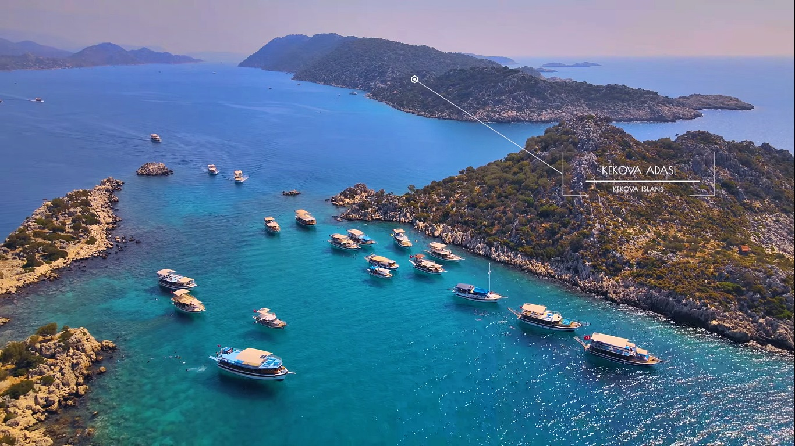

Olimposa ilk kez 2015 yılında gittiğimde fotoğraftaki güzel insanlardan Utku ile tanışma fırsatı bulmuştum. Aradan 8 yıl geçtikten sonra canım sevgilim ve can dostlarım Ozan ve Utku ile bir kez daha Olimposa gitme şansı bulduk.
Konaklama yerimiz yine değişmedi ve Kadir's Tree Houses'da kaldık. İşletme Olimposun en bilinen eski işletmesidir. Olimposa bir kez gelen tekrar gelmeyi istediğinden bir çok müşterisi de eski yıllara dayanır.
Çardaklarında yeni insanlarla tanışmanız kaçınılmazdır. Konukların yarısı yerli, yarısı yabancı turistlerden oluşur diyebilirim.
Genel olarak kendi yetiştirdikleri ürünlerle hazırladıkları kahvaltı ve akşam yemekleriyle gayet ortalamanın üstünde doyurucu yemeklere sahip.
İşletmenin içersinde Olimposun en popüler disco/club'ı "Bull" mevcut. Buraya yalnızca Kadir'de kalan müşteriler ücretsiz giriş yapabiliyor.
Kadir's Tree Houses

Olimposun plajı sit alanı olarak geçtiğinden herhangi bir yapılanmaya izin verilmemektedir. Girişler gişeden müze kartıyla yapılmaktadır. 60 lira karşılığında sene boyunca sınırsız giriş yapılabilmektedir.
Gişeden geçtikten sonra sizi tarihi yapılar karşılıyor. Bu yapıların tarihçesini de orada okuyabilirsiniz.
Plaj taşlık olduğundan ziyaret edecek olanlara deniz ayakkabısı almalarını şiddetle tavsiye ederim.
Olimposta yapmayı en sevdiğim etkinlik yine tekne turları oldu. Genel olarak 3 farklı rotada yapılan turlar şöyle;
- Adrasan Suluada Turu
- Kekova Turu 
- Porto Ceneviz Turu
Tekne turları 500₺-600₺ civarına yapılıyor. Turların içinde yemek ve ikramlar oluyor.
Bu turlar içersinde Suluada Turu ve Porto Ceneviz Turu ortalama beşer koyda durup 6 saat sürüyor. Koy başına 30dk ila 45dk arasında tekne duruyor ve oralarda yüzülüyor.
Kekova turu ise 10 saat civarında sürüyor ve bazı tur sahiplerinden dinlediğim akdarıyla ulaşımı zorlu deniz yolları üzerinden gerçekleştiğinden yorucu oluyormuş. Kekova turu daha çok tarihi bir anlam taşıyor.
Olimposta düzenlenen diğer etkinlikler şu şekilde:
- Chimera (Yanartaş) Yürüyüşü
- Kaya Tırmanışı
- Sualtı Tüplü Dalış
- ATV Turu